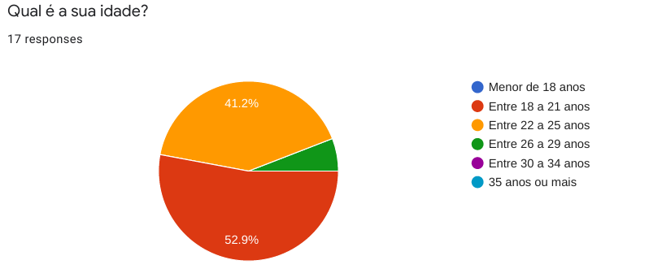
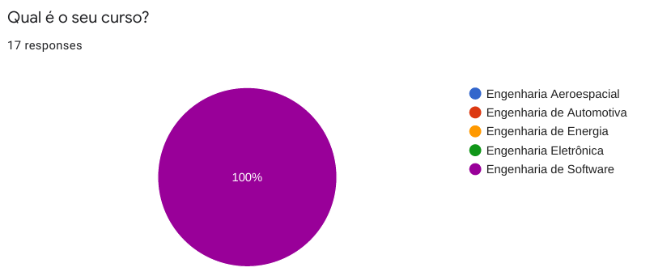
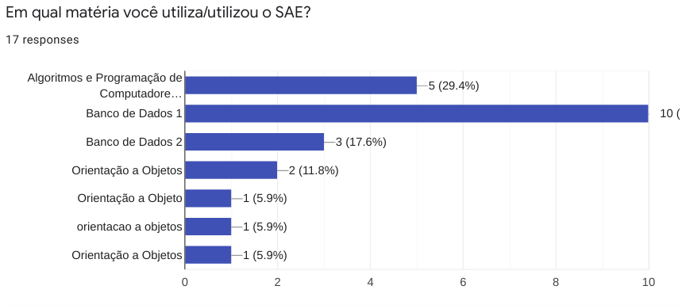
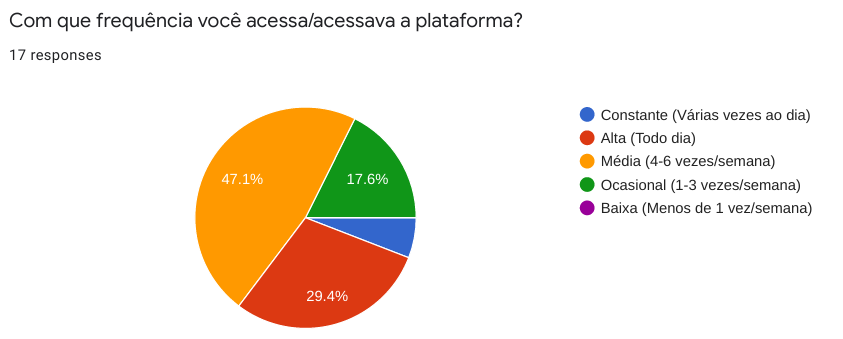
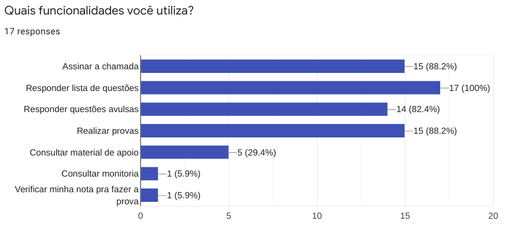
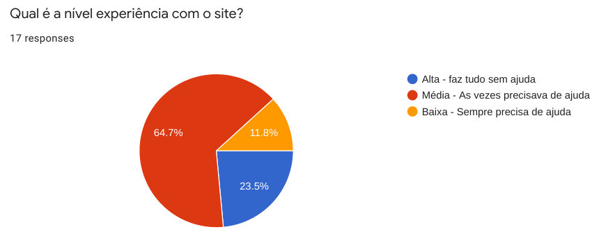
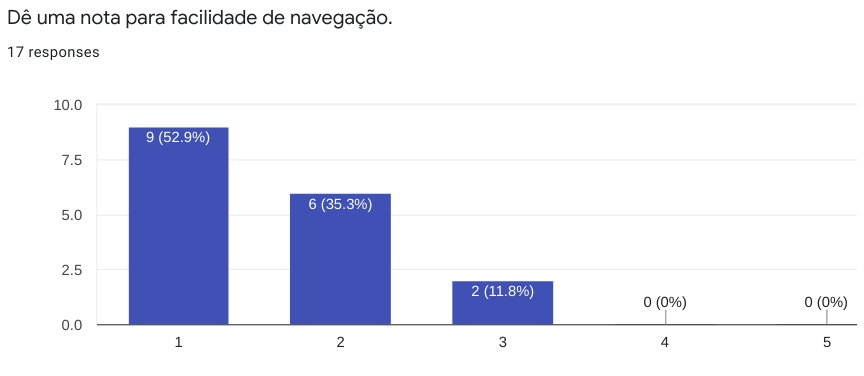
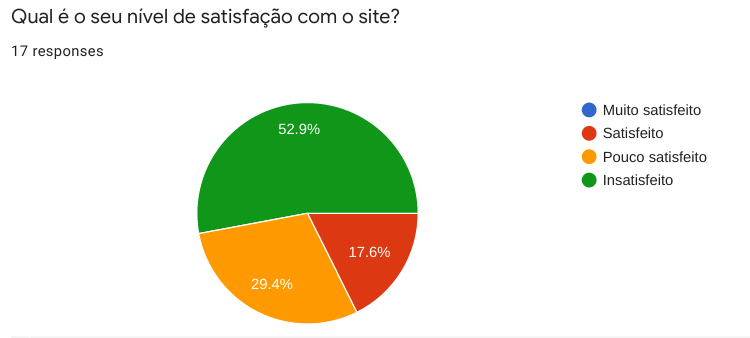

Perfil de Usuários:
Objetivo:
O objetivo principal desse módulo é traçar um perfil de usuário que revele de maneira clara as principais características dos nossos usuários.
Tendo em vista o escopo do nosso projeto, sobre uma plataforma educacional e focado na visão do aluno, já temos de antemão algumas informações, como ocupação (estudantes universitários) e escolaridade (ensino superior). A partir disso, escolhemos o método de aplicação de questionário, devido a sua velocidade de coleta de dados, da grande quantidade de usuários que pode ser alcançada e a facilidade de analisar os dados que podem ser apresentados de forma gráfica. Assim, podemos reunir ainda mais informações e traçar o perfil dos usuários, focando em sua relação com a plataforma SAE.
Resultados:
Dados dos usuários:


Relação entre usuário e a plataforma SAE:






Além dessas perguntas, foram coletadas sugestões dos usuários para melhorias na plataforma SAE. Essas sugestões serão utilizadas posteriormente
Conclusão:
Pode-se perceber, que:
* A maioria dos usuários tem entre 18 e 25 anos e são estudantes de Engenharia de Software.
* O SAE é utilizado principalmente nas matérias de Algorítmos e Programação de Computadores (APC) e Banco de Dados.
* Os recursos mais utilizados do SAE são Responder listas de questões, assinar chamada, realizar provas e responder questões avulsas.
* Poucos usuários estão satisfeitos com a usabilidade da plataforma SAE.
Versionamento:
| Data: | Versão: | Descrição: | Autor: |
|---|---|---|---|
| 03/10/2020 | 0.1 | Criação do formulário de pesquisa | Rafael Ribeiro |
| 05/10/2020 | 1.0 | Criação da Página com perfis de usuários | Gabriel Paiva e Murilo Gomes |